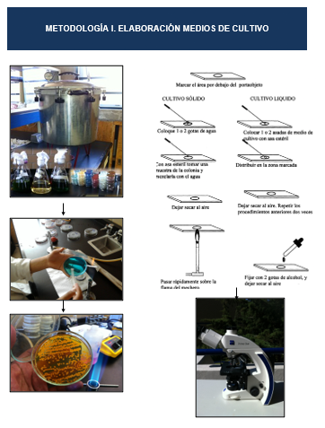
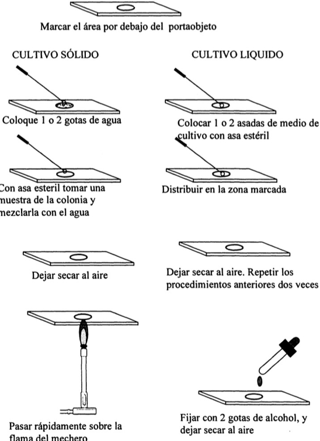
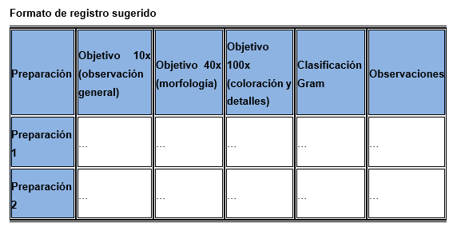
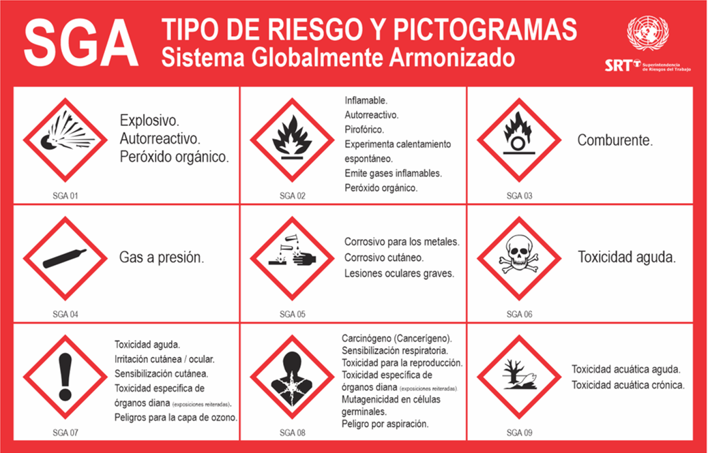
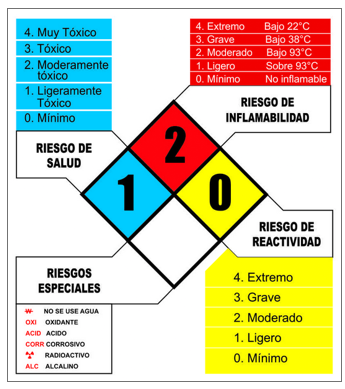
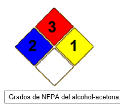
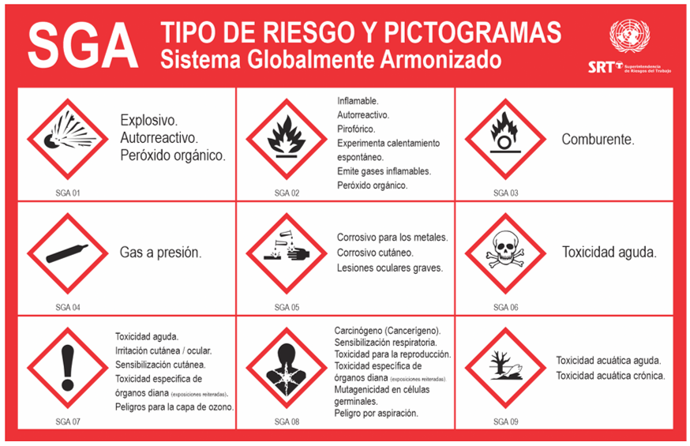
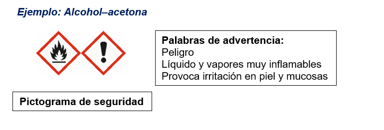

Metodología para la observación de preparaciones permanentes en microscopio compuesto
Objetivo
Observar al microscopio compuesto las preparaciones permanentes teñidas, con el fin de identificar la morfología bacteriana y distinguir entre bacterias Gram positivas y Gram negativas.
Materiales
-Preparaciones permanentes (portaobjetos con tinción de Gram y medio de montaje).
-Microscopio compuesto (con objetivos de 10x, 40x y 100x).
-Aceite de inmersión.
-Papel bibula o papel absorbente sin pelusa.
Procedimiento
1.Preparación del equipo
Colocar el microscopio en una superficie plana y conectar la fuente de luz.
Ajustar el diafragma e intensidad de luz a nivel medio.
Limpiar los objetivos con papel bibula, especialmente el de inmersión (100x).
2.Colocación de la muestra
-Colocar el portaobjetos con la preparación permanente en la platina del microscopio.
-Fijarlo con las pinzas mecánicas.
3.Enfoque inicial
-Comenzar con el objetivo de 10x (baja magnificación).
-Usar el tornillo macrométrico hasta visualizar la muestra.
-Ajustar la nitidez con el tornillo micrométrico.
Aumento intermedio
-Cambiar al objetivo de 40x (alta magnificación en seco).
-Ajustar el diafragma para permitir más paso de luz.
-Enfocar con el tornillo micrométrico, sin usar el macrométrico.
Aumento máximo (inmersión en aceite)
-Retirar el objetivo de 40x y colocar una gota de aceite de inmersión directamente sobre el cubreobjetos.
-Deslizar el objetivo de 100x (inmersión) hasta que toque el aceite.
-Enfocar únicamente con el tornillo micrométrico hasta lograr nitidez.
-Regular la luz con el diafragma para optimizar el contraste.
Registro de observaciones
-Dibujar o fotografiar la preparación observada.
-Anotar:
----Morfología bacteriana (cocos, bacilos, espirilos).
----Tipo de agrupación (racimos, cadenas, pares).
----Coloración (Gram + morado / Gram – rosado).
----Observaciones relevantes (tamaño relativo, densidad, calidad de la tinción).
Finalización
-Retirar la preparación y limpiar inmediatamente el objetivo de 100x con papel bibula para retirar el aceite.
-Apagar el microscopio y cubrirlo con su funda protectora.
Resultados esperados
-Identificación clara de bacterias Gram positivas y Gram negativas.
-Reconocimiento de formas y agrupaciones bacterianas.
-Desarrollo de habilidades en el manejo responsable del microscopio compuesto.

METODOLOGÍA II . OBSERVACIÓN DE PREPARACIONES PERMANETES

Medidas de seguridad en la práctica
- Reactividad de las sustancias
Durante la realización de medios de cultivo y las actividades asociadas a esta práctica, se emplean diversas sustancias químicas que, aunque se utilizan en pequeñas cantidades, requieren un manejo cuidadoso. Por ello, antes de iniciar el trabajo experimental, es indispensable consultar previamente las Hojas de Datos de Seguridad (HDS) y las etiquetas de los reactivos, las cuales incorporan tanto el sistema NFPA como los pictogramas del Sistema Globalmente Armonizado (SGA), conforme a la NOM-018-STPS-2015.
Esta información permite identificar de manera sencilla los riesgos para la salud, la inflamabilidad y la reactividad de las sustancias, con el fin de prevenir accidentes y fomentar una cultura de trabajo seguro en el laboratorio.
- Sustancias utilizadas en la práctica:
· Cristal violeta: puede causar irritación en la piel, los ojos y las mucosas; su ingestión prolongada es tóxica, por lo que debe manipularse con guantes y evitar el contacto directo.
· Lugol (yodo Gram): en concentraciones elevadas puede resultar irritante o corrosivo, especialmente para la piel y los ojos.
· Alcohol–acetona: mezcla clasificada como altamente inflamable; sus vapores pueden provocar mareos o irritación respiratoria, por lo que debe mantenerse alejada de flamas y fuentes de calor.
· Safranina: colorante que puede causar irritación cutánea y ocular; se debe evitar su ingestión o inhalación.
· Medios de cultivo preparados con agar: durante su preparación no representan un riesgo químico significativo; sin embargo, después de su uso deben considerarse residuos biológicos contaminados, ya que pueden contener microorganismos.
- Sistema de identificación de peligros
En el laboratorio, los reactivos se encuentran etiquetados conforme a dos sistemas complementarios:
a) Diamante de seguridad NFPA
Este sistema informa de manera rápida sobre:
· Riesgo a la salud (azul)
· Riesgo de inflamabilidad (rojo)
· Riesgo de reactividad (amarillo)
· Indicaciones especiales (blanco)
Ejemplo: Alcohol–acetona
Salud: 2 (riesgo moderado)
Inflamabilidad: 3 (riesgo grave)
Reactividad: 1 (ligero)


b) Pictogramas de peligrosidad (Sistema Globalmente Armonizado (SGA) / CRETIB)
El SGA utiliza 9 pictogramas principales, que consisten en un símbolo negro sobre fondo blanco con marco rojo en forma de rombo:


El código CRETIB se utiliza para clasificar residuos peligrosos (residuo sólido, líquido o lodo que presenta un riesgo) según la normativa mexicana NOM-052-SEMARNAT-2005:
- C - Corrosivo: Materiales que dañan tejidos vivos y materiales.
- R - Reactivo: Sustancias inestables que pueden reaccionar violentamente.
- E - Explosivo: Residuos que pueden estallar bajo ciertas condiciones.
- T - Tóxico (Ambiental/Salud): Sustancias dañinas si se inhalan, ingieren o tocan.
- I - Inflamable: Residuos que se prenden fácilmente.
- B - Biológico-infeccioso: Residuos con microorganismos que causan enfermedades
Esta identificación es fundamental para clasificar, etiquetar y envasar correctamente los residuos, conforme a los criterios CRETIB, evitando riesgos a la salud y al ambiente.
- Consideraciones finales de seguridad
De acuerdo con las disposiciones institucionales:
- No se debe desechar ningún residuo a la tarja, salvo indicación expresa del profesor responsable.
- Los residuos deben recolectarse en contenedores diferenciados, perfectamente etiquetados con el tipo de residuo, fecha y práctica realizada.
- En caso de duda sobre la clasificación de un residuo, este debe etiquetarse y entregarse a la jefatura de laboratorios para su manejo adecuado
El correcto manejo de las sustancias y de los residuos no solo previene accidentes, sino que también forma parte de la responsabilidad científica y ambiental que debe asumir todo estudiante durante el trabajo experimental
Medidas de seguridad en la práctica
- Usar siempre bata, guantes, lentes y cubrebocas.
- Evitar la inhalación directa de vapores y trabajar en un área ventilada.
- Mantener alejadas las sustancias inflamables de fuentes de calor directo.
- No pipetear con la boca, usar siempre pipetas automáticas.
- Desechar residuos líquidos en frascos de solventes usados y sólidos en bolsas rojas para residuos biológicos.
4. CON LAS IMÁGENES TAMBIÉN SE APRENDE! (Uso de las TIC)
- Antes de iniciar la actividad experimental, utiliza tu celular o dispositivo digital para capturar fotografías y videos de cada fase del procedimiento (siembra, incubación, tinción, observación en el microscopio).
- Estas evidencias visuales se integrarán en el diagrama de bloques del procedimiento y en el informe final de la práctica.
- Además del reporte escrito, cada equipo deberá entregar un video resumen elaborado con las fotografías y clips obtenidos durante la actividad. Este material servirá para reforzar la memoria visual del proceso y compartir resultados con el grupo.
- Se recomienda emplear herramientas digitales (Canva, Genially, PowerPoint, CapCut, etc.) para organizar y presentar la evidencia de manera clara y atractiva.
5. REGISTRO DE OBSERVACIONES, DATOS Y EVIDENCIAS EXPERIMENTALES
Durante la práctica, los estudiantes deberán documentar:
- Una fotografía de cada paso experimental.
- La morfología bacteriana observada (cocos, bacilos, espirilos).
- La importancia de los microorganismos en la salud, el ambiente y la biotecnología.
- La metodología de observación empleada con el microscopio compuesto.